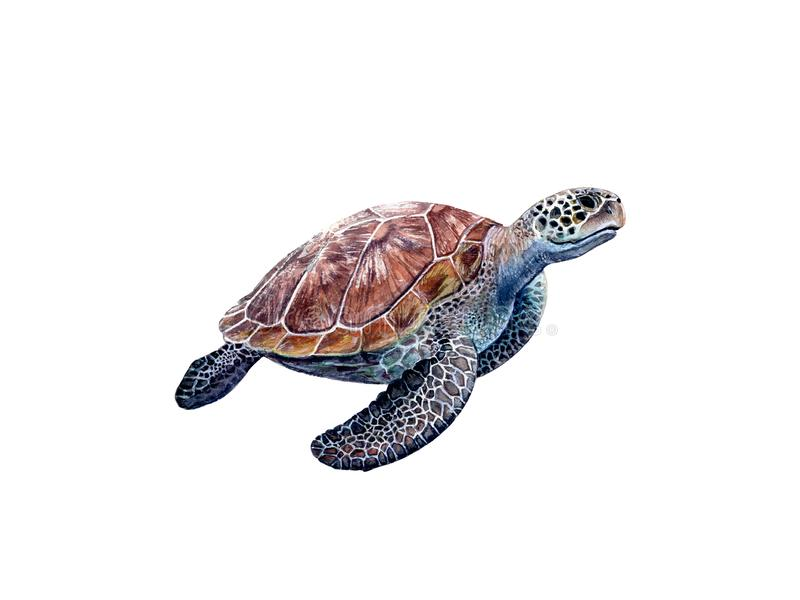
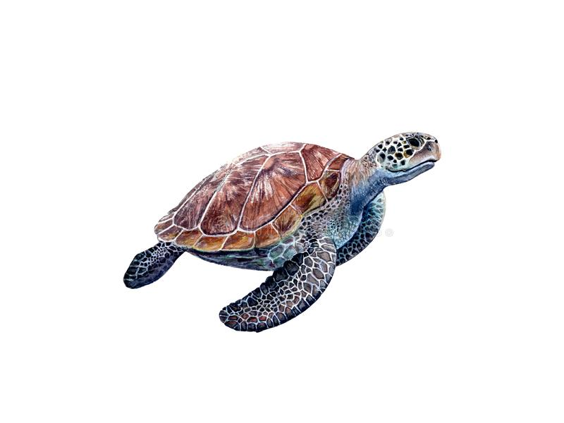

Climate change is the greatest global threat to coral reef ecosystem. Evidence suggests that
increases in temperature and changes in the atmosphere are directly linked to greenhouse gases, which
have been on the rise due to human activities.
So how does this effect coral reefs?
The answer lies in the temperature.
As global temperatures rise, sea temperatures also naturally rises. This becomes the perfect condition
for infectious diseases to breed and allows for a process known as coral bleaching to take place.
To better understand coral bleaching, we must first understand how a coral survives.
A coral has a symbiotic (both sides benefit) relationship with algae (known as zooxanthellae). This species
of algae supply the coral with food and give the coral color.
If the coral becomes stressed due to increases in temperature, this algae leaves the coral; essentially leaving the
coral vulnerable to infection and attacks. If nothing is done, the coral will eventually die.
Corals are an essential part of, not only the ocean, but to humanity and the Earth as a whole. Without corals coastlines
will erode, storms will appear much stronger, people will lose jobs, and over half a billion people will be without food.